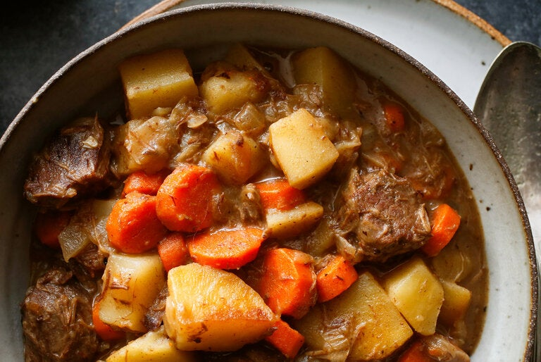

Beef Stew

Description
This classic stick-to-your-ribs stew is the ideal project for a chilly weekend. Beef, onion, carrots, potatoes and red wine come together in cozy harmony. If you are feeding a crowd, good news: It doubles (or triples) beautifully.
Ingredients
- Flour
- Ground Pepper
- Stew meat
- Vegetable oil
- Red wine Vinegar
- Red Wine
- Beef Broth
- Bay leaves
- Medium Onion
- Medium carrots
- Potatoes
- Salt
Instructions
- Combine the flour and pepper in a bowl, add the beef and toss to coat well. Heat 3 teaspoons of the oil in a large pot. Add the beef a few pieces at a time; do not overcrowd. Cook, turning the pieces until beef is browned on all sides, about 5 minutes per batch; add more oil as needed between batches.
- Remove the beef from the pot and add the vinegar and wine. Cook over medium-high heat, scraping the pan with a wooden spoon to loosen any browned bits. Add the beef, beef broth and bay leaves. Bring to a boil, then reduce to a slow simmer.
- Cover and cook, skimming broth from time to time, until the beef is tender, about 1½ hours. Add the onions and carrots and simmer, covered, for 10 minutes. Add the potatoes and simmer until vegetables are tender, about 30 minutes more. Add broth or water if the stew is dry. Season with salt and pepper to taste. Ladle among 4 bowls and serve.